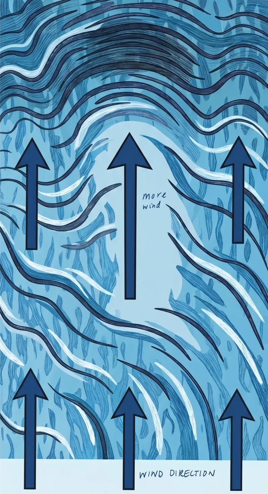
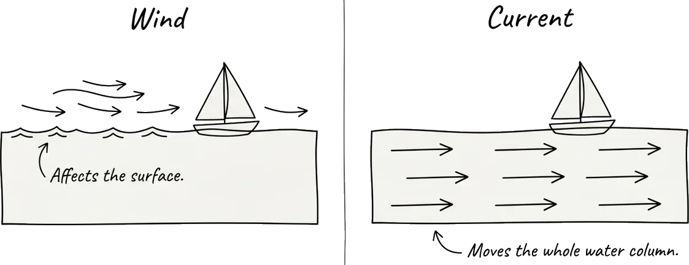
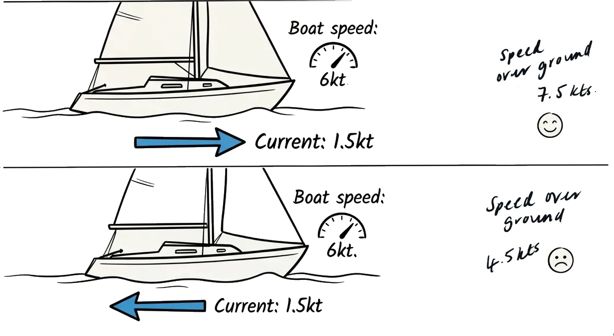
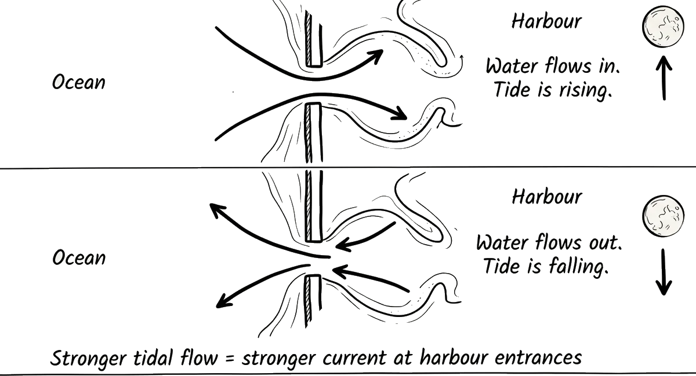

Here's something that took me a good amount of time to learn: the fastest boat doesn't win offshore races. The smartest one does.
Your boat speed is one variable. The environment it's moving through has three: what the wind is doing, what the water is doing underneath you, and where the tide is pushing both. Get those three right and a slower boat beats a faster one. Get them wrong and you can sail beautifully and still finish last.
1. Reading the wind on the water
Wind is invisible, but it leaves fingerprints everywhere. Learning to see them is one of the most useful skills in sailing, and one of the first things that separates someone who sails from someone who sails well.
Dark patches on the water. More wind compresses the surface into smaller, steeper ripples that absorb light instead of reflecting it. A dark patch on the water is a gust arriving. A lighter, glassy patch is a lull. From a distance, you can pretty much see the wind map on the water surface - and if you're watching, you get five, ten, sometimes thirty seconds of warning before a gust hits you.
Flags, smoke, and other boats. Look around. Flags on shore, smoke from anything on land, the heel angle of boats upwind of you - these all tell you what the wind is doing before it reaches you.

2. Wind shifts - the single biggest tactical advantage
Wind doesn't blow in a straight, constant line. It oscillates - swinging left and right of its average direction. These swings are called shifts.
A shift is either a header or a lift:
Header: the wind shifts toward your bow, forcing you to bear away from your target. If you were sailing toward a mark and the wind headers you, you're now pointing away from it.
Lift: the wind shifts away from your bow, letting you point closer to your target. A lift is a gift - you're now sailing a more direct line to the mark.
On a beat to windward, the basic rule is: tack on the headers, ride the lifts. If the wind shifts and you're suddenly pointing away from the mark, tack - because the shift that headed you on one tack will lift you on the other.
Two types of wind shift
- Oscillating shifts swing back and forth around an average direction. Play them by tacking on the headers. The wind will swing back - be patient.
- Persistent shifts keep moving in one direction, often caused by a sea breeze building or a weather system moving through. Sail toward the side the shift is coming from first, then ride it to the mark.
Before a race, it can help to watch the wind for 5-10 minutes. Is it swinging back and forth, or trending one way?
3. True wind vs. apparent wind
True wind is the actual wind - what you'd feel standing still on the dock. It has a speed and a direction, and it doesn't change just because you start moving.
Apparent wind is what you feel on the boat. It's the combination of the true wind and the wind your boat creates by moving through the air. If you've ever stuck your hand out of a car window on a still day and felt wind - that's apparent wind. The car's motion creates it.
On a sailboat, the apparent wind is always shifted forward and increased in speed compared to the true wind:
- Sailing faster shifts the apparent wind forward. This is why boats that accelerate in gusts need to bear away slightly - the apparent wind angle has changed even though the true wind hasn't.
- Sailing downwind makes the apparent wind lighter than the true wind (you're running away from it). This is why downwind legs feel deceptively calm even in strong breeze.
- Sailing upwind makes the apparent wind stronger than the true wind (you're sailing into it). This is why close-hauled always feels windier than it really is.
Your sails only know the apparent wind. Your instruments can display either.
4. Understanding current

Current is water moving horizontally. It comes from several sources: tides filling and draining basins, temperature differences between water masses, prevailing winds pushing surface water, and geographic features like headlands and channels that accelerate the flow.
For sailors on the east coast of Australia, the big one is the East Australian Current (EAC). It flows southward along the NSW coast, sometimes at 2-3 knots. That sounds modest until you do the maths: if you're sailing north at 6 knots through the water but the EAC is pushing you south at 2 knots, your speed over ground - the speed that actually matters for getting to the finish - is only 4 knots.
Speed over ground vs. speed through water. Your knotmeter (the speed sensor on the hull) measures how fast you're moving through the water. Your GPS measures how fast you're moving over the earth's surface. The difference between those two numbers is the current (or waves, or something affecting your speed through the water). If your knotmeter says 6 and your GPS says 4, you've got 2 knots of adverse current. If your knotmeter says 6 and your GPS says 8, you've found 2 knots of favourable current. Comparing these two numbers is how you find the fast lanes offshore.

Where to find favourable current
- Close to shore: friction from the seabed and coastline slows the main current. On the NSW coast, the EAC is weakest within a few miles of land.
- In counter-currents: the main flow often creates eddies close to shore that run the opposite direction.
- Behind headlands: promontories create current shadows on their downstream side.
- In shallow water: current is generally weaker where the water is shallow.
Wind against current. When the wind blows against the current, waves get steeper and closer together. The current effectively slows the waves down, compressing them. This is why harbour entrances can be dangerous on an outgoing tide with an onshore wind - conditions can be dramatically worse than in open water just a few hundred metres away.
5. How tides work
Tide is the vertical rise and fall of water caused by the gravitational pull of the moon and sun. Current is the horizontal movement of water that results from the tide filling and draining coastal basins. They're related but different: tide is up-and-down, current is side-to-side.
The basics. The moon's gravity pulls the ocean toward it, creating a bulge of water on the side of the earth nearest the moon - that's high tide. There's a second bulge on the far side of the earth caused by the centrifugal force of the earth-moon system. Between the two bulges, water is pulled away - that's low tide. As the earth rotates, most coastlines pass through two high tides and two low tides roughly every 24 hours and 50 minutes.
Spring and neap tides. When the sun and moon are aligned (at full moon and new moon), their gravitational pulls combine. This gives you spring tides - the biggest tidal range, the highest highs, the lowest lows, and the strongest tidal currents. When the sun and moon are at right angles (first and third quarter), they partially cancel out, giving you neap tides - the smallest range and weakest currents.

Start with three habits
If all of this feels like a lot, don't worry. Start with three habits and build from there:
1. Check the tide table before you sail. Know when it's high, when it's low, and roughly which direction the current will be flowing.
2. Compare your knotmeter to your GPS constantly. The difference is current. Sail toward the favourable current and away from the adverse.
3. Watch the water surface. Dark patches are more wind coming. Glassy patches are less. Steep, choppy water often means wind against current.